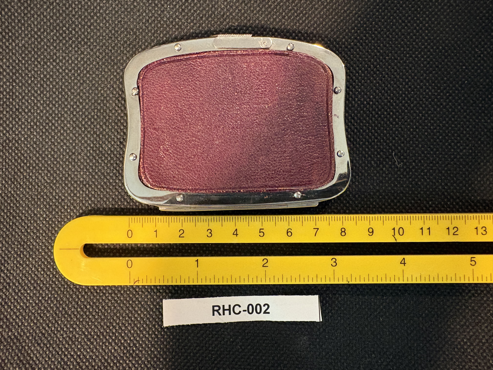
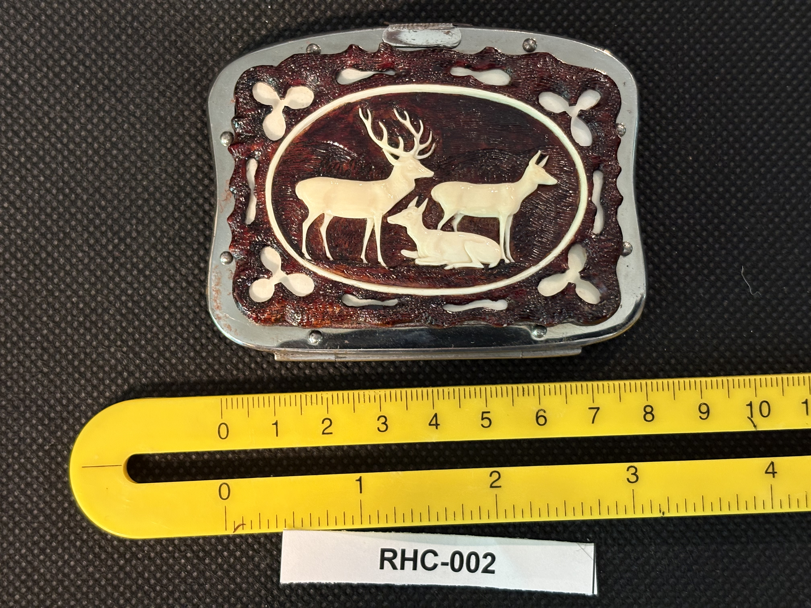

RHC-002 reviewed
Carved Horn Purse Frame/Clasp with Deer Family Medallion


- Object Type
- Carved horn purse frame/clasp (hinged, kiss-lock style) — likely the frame of a small antique coin purse or clutch, possibly missing its original fabric pouch/body
- Material
- Carved horn — a dark burgundy/maroon outer layer carved in relief down to a lighter cream-colored under-layer, creating a two-tone cameo effect. Set in a nickel- or chrome-plated metal frame with rivets and a top hinge; reverse panel appears to be leather or heavy fabric riveted into the same frame.
- Dimensions (cm)
- length: 9.2cm — Only one axis (width across the frame, ~9.2cm) is measurable against the ruler in the photos; the ruler is not shown along the other axis, so height/depth is not measured.
- Subject Matter
- An oval medallion carved in relief depicting a deer family — an antlered buck, a doe, and a fawn — set against the dark burgundy ground, bordered by cut-out floral/clover-shaped motifs at the corners of the frame.
- Artist Attribution
- unknown
- Date / Period
- Undated. Carving style (dark carved horn relief with cut-out floral border, kiss-lock metal frame) is consistent with 19th–early 20th century European (possibly Alpine/'Black Forest' style) tourist or folk craft — this is a stylistic estimate only, not confirmed.
- Mount / Display Stand
- Not mounted. Photographed propped upright on a small wooden easel/stand (visible in RHC-002-a) — appears to be a photography prop to stand the piece up for the shot, not part of the object itself.
- Color / Technique
- Relief carving, not scrimshaw line engraving — the horn is carved down through a darker outer layer to reveal a lighter integral layer beneath, producing a cameo-style two-tone image. This is a distinct technique from the incised, ink-filled line engraving seen on RHC-001.
- Condition Notes
- Metal frame shows light surface tarnish; rivets appear intact; hinge at top appears functional in photos. Leather/fabric back panel shows wear consistent with age and handling. No visible cracks or losses in the carved horn panel. Not physically examined.
- Distinguishing Features
- Structurally reads as a purse/clutch frame (hinge + two riveted-in panels, one decorative front, one plain back) rather than a standalone display plaque — possibly missing its original fabric pouch/body. Technique is carved horn relief, not scrimshaw engraving, which raises the broader question of whether 'Scrimshaw' is the right umbrella name for this whole collection (Mike flagged this — to revisit once all items are categorized).
- Legal / Regulatory Status
- Material appears to be horn (keratin), not ivory or whale/marine-mammal-derived tooth material — horn is generally not subject to the same MMPA/CITES ivory restrictions as RHC-001, though species-specific protections could still apply depending on the source animal, which is not confirmed. Lower regulatory concern than RHC-001, but unconfirmed.
- Rights / Copyright
- No maker's mark or signature identified; appears to be workshop-made decorative hardware rather than a signed individual artwork. No specific copyright concern identified beyond standard object photography rights.
- Keywords
- carved horn purse frame kiss-lock clasp deer family relief carving not scrimshaw technique possible European folk art
- Status
- reviewed
- Date Cataloged
- 2026-07-15
Open Research Questions
Research finding (phase 3, 2026-07-15): Confirmed carved horn was a real, established material for Victorian purse/handbag frame hardware (alongside carved bone, ivory, and tortoiseshell), used for clasps and closures as handbag design evolved from simple drawstrings toward more elaborate framed closures in the late 19th century. No maker mark or specific attribution found for this piece's deer-family medallion motif; general period placement (Victorian-era carved horn accessory hardware) is supported by the material and form.